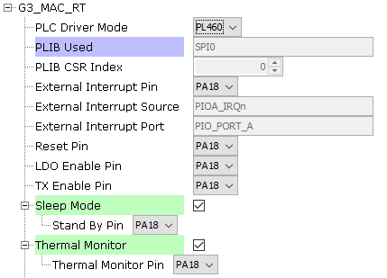
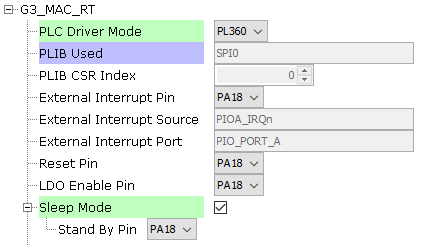
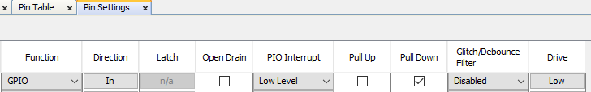
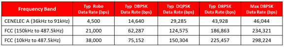
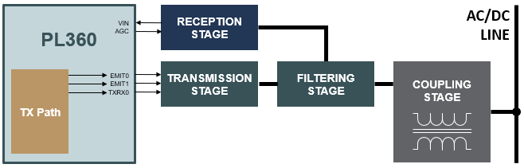
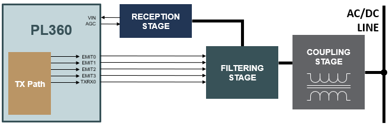
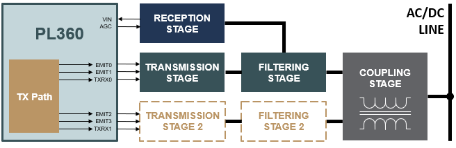

1.1.2.3 Configuring The Library
G3 PLC MACRT Driver Specific User Configurations
G3 PLC MACRT Driver library is configured via MCC. Below is the Snapshot of the MCC configuration window for G3 PLC MACRT driver and brief description.
PLC Driver Mode Used:
Specifies the PLC device physically connected
The pins in use will vary depending on the device selected
Configuration for PL460 device
Figure . PL460 configuration options Configuration for PL360 device
Figure . PL360 configuration options 
PLC Driver Peripheral Used:
Indicates the SPI peripheral instance used by the G3 PLC MACRT driver
The name of the peripheral will vary from device to device
PLC Driver Chip Select Used:
Indicates the SPI CS line to which PLC transceiver is connected to
This option may vary from device to device
PLC Driver External Interrupt Pin Used:
GPIO Pin to be used as external interrupt interface (active low)
This pin automatically indicates that the firmware running in the PLC device has one or more pending events to be handled
Pin selection automatically updates External Interrupt Source and External Interrupt Port fields
This pin must be configured as GPIO input in "Pin Settings" configuration. Set Pull Down configuration.
Figure . PLC PIO Interrupt settings 
PLC Driver Reset Pin Used:
GPIO Pin to be used as reset (active low)
This pin must be configured as GPIO output in "Pin Settings" configuration
This pin resets the core and the peripherals of the PLC device
PLC Driver LDO Enable Pin Used:
GPIO Pin to be used as LDO enable (active high)
This pin must be configured as GPIO output in "Pin Settings" configuration
This pin provides power to the core voltage regulator embedded in the PLC device
PLC Driver TX Enable Pin Used (PL460 mode):
GPIO Pin to allow PLC transmissions (active high)
This pin must be configured as GPIO output in "Pin Settings" configuration
Enable Sleep Mode:
In Sleep mode, the core of the device and the peripherals are reset reducing power consumption
PLC Driver Standby Pin Used:
GPIO Pin to be used as sleep mode enable (active high)
This pin must be configured as GPIO output in "Pin Settings" configuration
Enable Thermal Monitor (PL460 mode):
Enable Thermal Monitor interface
PLC Driver Thermal Monitor Pin Used (PL460 mode):
GPIO Pin to check the status of the Thermal monitor
This pin must be configured as GPIO output in "Pin Settings" configuration
PLC Coupling Settings:
PLC Driver mode must have been selected before to obtain a valid PLC coupling settings for each mode
Used to establish the hardware configuration associated to the PLC frequency bands to use
The options of this configuration will vary depending on the PLC Driver Mode selected
PL460:
Main Branch:
Figure . PL460: Hardware blocks in a single band 
The main transmission branch uses the embedded class-D PLC line driver to optimize performance in terms of efficiency and EMC compliance while reducing BOM cost and PCB complexity.
This is the default branch for single-band applications either in CEN-A, CEN-B or FCC bands.
Figure . G3 frequency table FCC high attenuation branch:
This option is visible only for FCC configured as the main branch.
The PL460 is capable of automatically managing two external filters in the filtering stage, each filter associated to an ASOx line.
Multiband:
Figure . PL460: Hardware blocks in multiband 
This option is visible only for FCC as main branch.
Used to select CEN-A or CEN-B as the auxiliary PLC phy band.
Auxiliary Branch:
The Auxiliary Transmission Branch can provide an additional output bit-stream, if required.
The Auxiliary Transmission path cannot use the embedded PLC driver in the PL460 and requires an external circuit for signal amplification, in addition to the standard filtering and coupling stages.
Set as default branch:
Used to establish Auxiliary branch in the intialization of the PHY PLC driver.
PL360:
Main Branch:
Figure . PL360: Hardware blocks in a single band with external coupling This is the default branch for single-band applications either in CEN-A, CEN-B or FCC bands.
FCC high attenuation branch:
This option is visible only for FCC configured as the main branch
Internal Driver:
This option is visible only for PL360 driver mode and CEN-B configured as the main branch
Figure . PL360: Hardware blocks in a single band with internal coupling In case of using a coupling with internal driver, only one branch is allowed and all the four EMIT pins must be connected to the same point and transmission control is indicated by TXRX0.
Multiband:
Figure . PL360: Hardware blocks in multiband with external coupling This option is visible only for FCC as main branch.
Used to select CEN-A or CEN-B as the auxiliary PLC phy band
Auxiliary Branch:
The Auxiliary Transmission Branch can provide an additional output bit-stream, if required.
Set as default branch:
Used to establish Auxiliary branch in the intialization of the PHY PLC driver.
NVIC Configurations
The G3 PLC MACRT driver has a strong dependency on a delay function defined in the HAL module. This delay function is called from the PIO Handler associated with the External Interrupt pin.
Applications designed in MCHP used as PLC examples use the Timer module as the delay interface, so the priority of the Timer interrupt must be higher that the rest of interrupts in order to ensure the correct operation.